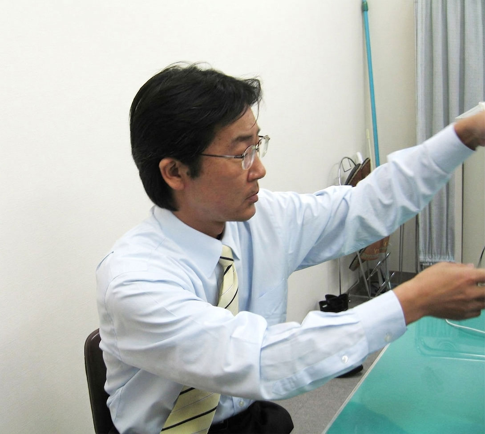
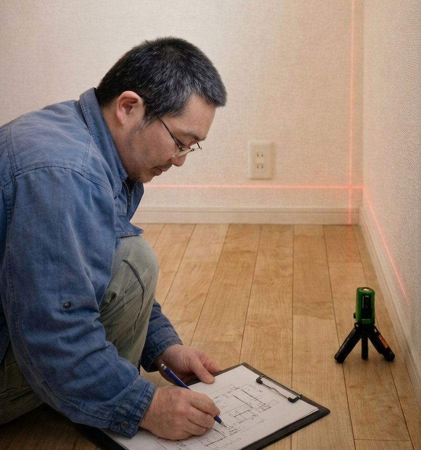
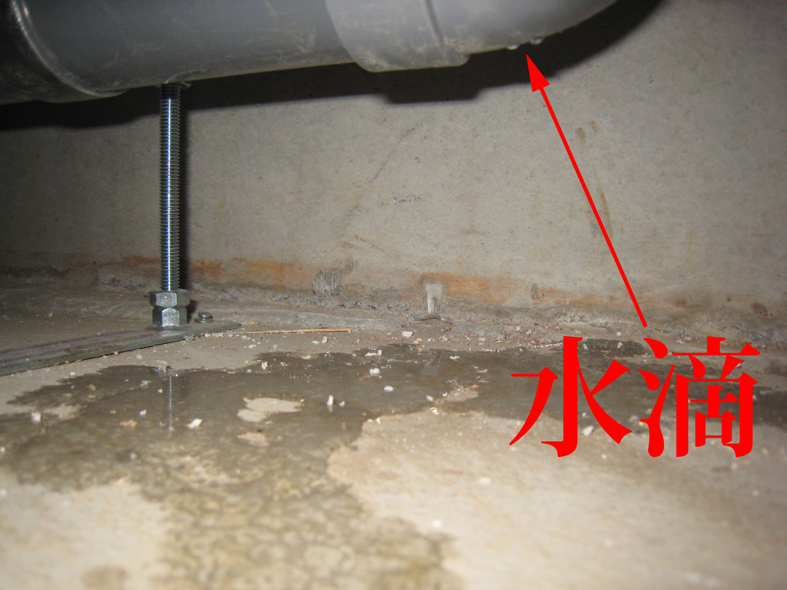
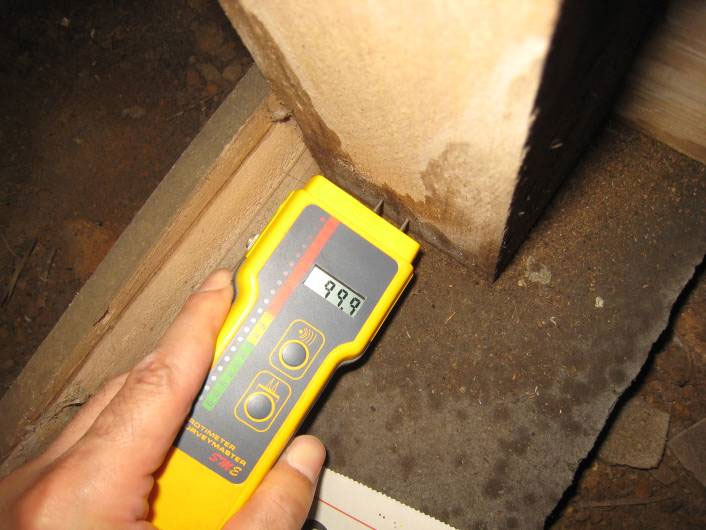
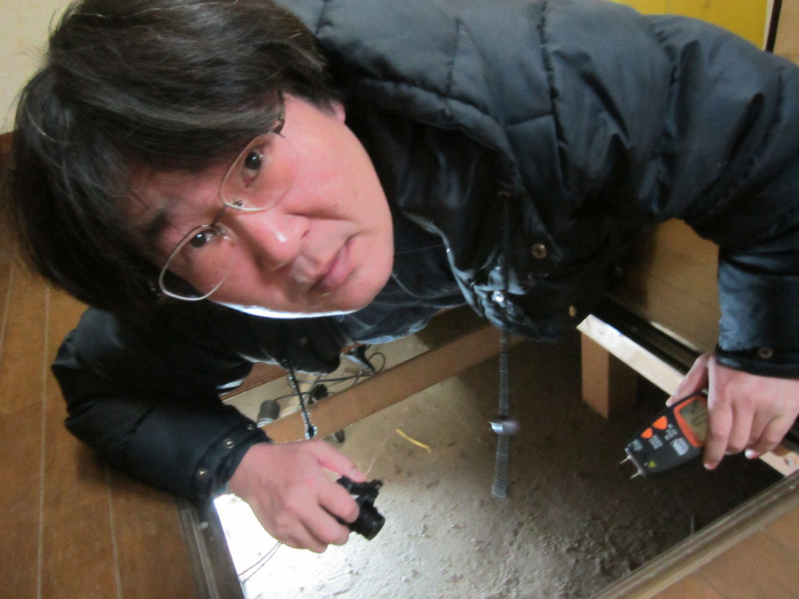
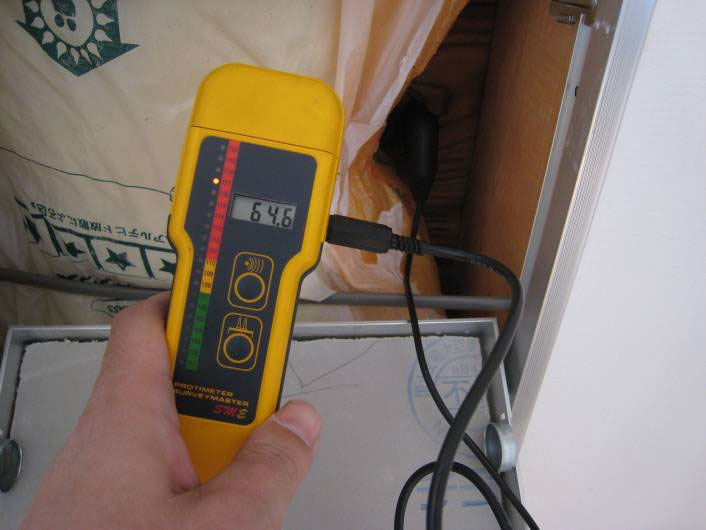
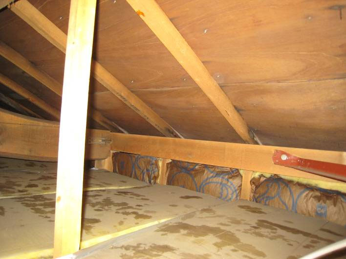

01 / REAL ESTATE
不動産仲介・仲介手数料
不動産を購入するとき、物件価格だけでなく仲介手数料も大きな費用になります。対象物件や条件を確認し、無料・割引をご案内します。
不動産仲介について →新しい住まい選びのカタチ。
インターネットによる自由な住まい探し。不動産仲介は、お客様に寄り添う、仲介のプロとしての専門性。

OUR SERVICES
不動産仲介と建築士による住宅診断。お家.comは、住まい探しを二つの面からサポートします。
01 / REAL ESTATE
不動産を購入するとき、物件価格だけでなく仲介手数料も大きな費用になります。対象物件や条件を確認し、無料・割引をご案内します。
不動産仲介について →02 / HOME INSPECTION
建物の傾きや床下、小屋裏など、普段は見えにくい部分も確認。購入前に気になる点を把握するための簡易チェックを行います。
建物の確認について →費用や建物について、気になることはありませんか。
サービスについて相談する ↗OUR APPROACH
費用の仕組みを見直すことから、無理のない住まい探しをサポート。対象物件や条件を確認し、ご案内します。
建物を専門家の視点でチェック。見えにくい部分の状態を確認し、住まい選びの判断材料をお伝えします。
— CONTACT
物件のURLやご希望をお知らせください。仲介手数料の目安や、建物について気になる点をご案内します。
フォームでお問い合わせ ↗HOME INSPECTION
内覧時に確認できる範囲で、建物の状態をチェック。実際の確認事例をご紹介します。
01 / LEVEL CHECK
レーザー測定器を使用し、建物内部の床や柱の傾斜を確認します。

02 / UNDERFLOOR
キッチン床下の排水管から水滴が落ち、土間にも漏水跡が確認された事例です。当初、売主からは「ボンドです」と説明されましたが、写真を示して状況を説明しました。

床下は普段目にすることのない場所です。湿気が多いと、木材の劣化や建物の寿命に影響することがあります。


※ 点検口から確認できる範囲の簡易チェックとなります。
03 / ATTIC
新築住宅でも、小屋裏で結露が発生することがあります。野地板などの状態を確認し、結露や雨漏りの可能性を見ていきます。


結露などを放置すると、木材の腐朽、カビの発生、断熱材への影響につながる可能性があります。
※ 小屋裏調査は、棚などを壊す恐れがある場合は行いません。点検口から安全に確認できる場合に限ります。
※本インスペクションは、宅地建物取引業法に基づく「建物状況調査」ではありません。
※簡易的なチェックであり、劣化事象等の見落としがあった場合でも、その責任を負うものではありません。
※全ての物件で行うものではありません。1物件に対する購入の意思表示が条件です。
※本インスペクションは、お客様への好意として行う簡易チェックです。責任を伴う詳細な調査をご希望の場合は、有料のインスペクションをご利用ください。
BROKERAGE FEE
新築一戸建て・リノベーションマンションは、対象物件や条件により仲介手数料が無料になる場合があります。中古戸建・土地は、半額・割引でご案内しています。
※すべての物件が対象ではありません。物件URLをお知らせいただければ、条件を確認してお見積もりします。
仲介料を見積もる ↗※仲介手数料の割引には、会社の承認が必要です。